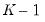
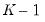

The randomization procedure is governed by the specified and the random fields. You may the leave the field blank, in which case EViews will use the clock to obtain a seed at the time of estimation, or you may provide an integer from 0 to 2,147,483,647.
The simple split method is parameterized using the parameter

, where the training set is the first set of observations, the of

, and the test set is comprised of the remaining observations.
The training/test split is parameterized using the parameter

. The number of Monte Carlo random splits is specified in the edit field.
The randomization procedure is governed by the specified and the random fields. You may the leave the field blank, in which case EViews will use the clock to obtain a seed at the time of estimation, or you may provide an integer from 0 to 2,147,483,647.
To specify your settings, fill in the edit field, then specify the number of and, and enter the test sample size in the edit field. The size of the training samples will be determined from the number of observations and the remaining settings.
You should enter the size of the initial training sample in the edit field, then specify the number of and, and enter the test sample size in the edit field.


is specified in the Number of folds edit field.
The randomization procedure is governed by the specified Random generator and the random Seed fields. You may the leave the Seed field blank, in which case EViews will use the clock to obtain a seed at the time of estimation, or you may provide an integer from 0 to 2,147,483,647.The simple split method is parameterized using the Training fraction parameteris specified in the Leave-out edit field.
To specify your settings, fill in the Number of Windows edit field, then specify the number of Pre-test gap obs and Post-test gap obs, and enter the test sample size in the Test horizon edit field. The size of the training samples will be determined from the number of observations and the remaining settings.You should enter the size of the initial training sample in the Initial training obs edit field, then specify the number of Pre-test gap obs and Post-test gap obs, and enter the test sample size in the Test horizon edit field.
 from the path.
from the path. path using the training set, and using the coefficients and the test set to compute evaluation statistics. Some cross-validation methods involve only a single partition, but others produce multiple training and test set partitions.
path using the training set, and using the coefficients and the test set to compute evaluation statistics. Some cross-validation methods involve only a single partition, but others produce multiple training and test set partitions. (roughly) evenly sized groups (“folds”). One fold is held out as the test set while the remaining  folds are combined into a training set. The model is estimated (“trained”) using the training set and the selection statistic is computed using the observations in the corresponding test set. This training and test step is repeated, with each fold acting as the test set. The selection statistics are averaged over the
(roughly) evenly sized groups (“folds”). One fold is held out as the test set while the remaining  folds are combined into a training set. The model is estimated (“trained”) using the training set and the selection statistic is computed using the observations in the corresponding test set. This training and test step is repeated, with each fold acting as the test set. The selection statistics are averaged over the  values to obtain a final value.
values to obtain a final value.
 observations, and a test set containing the remaining observations.
observations, and a test set containing the remaining observations.  times, with each observation acting once as the test set. The resulting statistics are averaged to obtain a final selection statistic value.
times, with each observation acting once as the test set. The resulting statistics are averaged to obtain a final selection statistic value. observations are held out as a test set, and the remaining observations are combined into a training set. This procedure is repeated for all distinct sets of
observations are held out as a test set, and the remaining observations are combined into a training set. This procedure is repeated for all distinct sets of  observations in the original sample. The resulting statistics are averaged to obtain a final selection statistic value.
observations in the original sample. The resulting statistics are averaged to obtain a final selection statistic value. .
. from the training sample estimates:
from the training sample estimates: observations in the test sample as:
observations in the test sample as: is adjusted accordingly.
is adjusted accordingly. .
. . Further we may compute the standard deviation of the mean of
. Further we may compute the standard deviation of the mean of  which may be used to provide additional guidance in selecting an optimal
which may be used to provide additional guidance in selecting an optimal  .
.